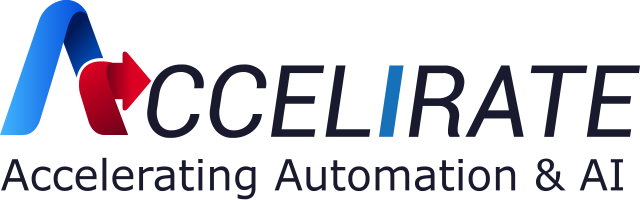
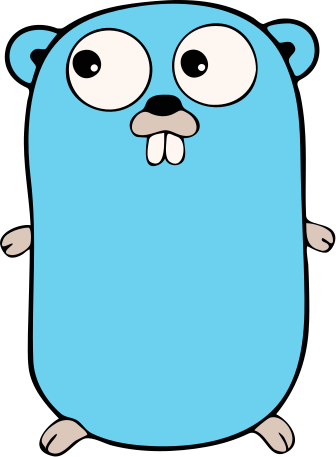
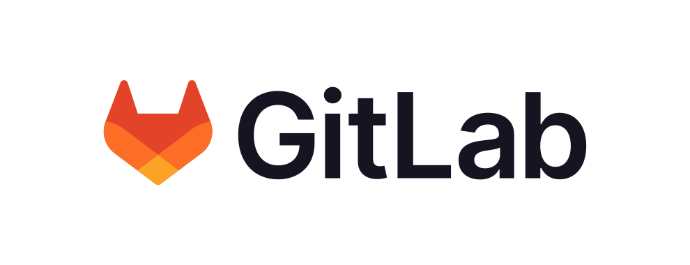
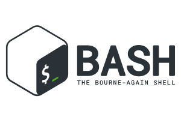
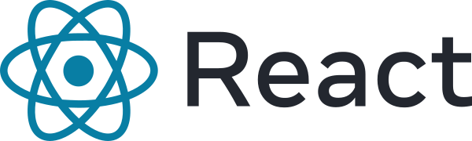
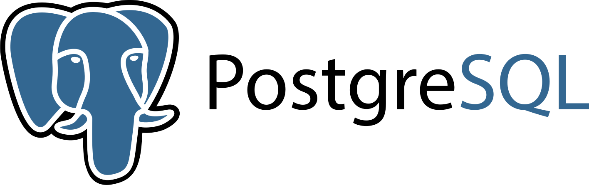

Experience
-
Application Development Engineer II
St. Louis, MO

- CRTR: Built and maintained high-throughput Go REST and GraphQL APIs on Kubernetes and AWS, serving billions of claims records under low-latency SLAs to internal teams and external vendors. CRTR acts as the convenience layer that replicates real-time CDC events from legacy Oracle SQL into MongoDB via Kafka and Informatica, absorbing millions of reads and injections that Oracle alone could not handle.
- Windower: Designed a Go microservice that windows and dedupes Kafka CDC claim events through an in-memory cache, flushing only matured, unique claims downstream. Cut MongoDB write volume enough to downgrade our Atlas tier (M6 to M4), yielding meaningful cost savings while improving end-to-end pipeline throughput.
- Observability: Authored a reusable Go logging package integrated with OTEL, Dynatrace, and Splunk and refactored existing services to adopt it. Surfaced performance regressions our unit tests and QA missed, giving the team traces to debug production issues before customers reported them.
- Cloud Migration & CI/CD: Partnered with Public Cloud Services & Enterprise Architecture to migrate Unified Member View, Provider Data Management, Claims RTR, and CenProv/CenPoint onto AWS, and authored GitLab CI pipeline frameworks to standardize build, test, and release across our microservice estate.
- On-Call: Weekly on-call rotation each month — triage vendor tickets, rehydrate customer data, ship patches inside change windows, and drive root-cause analysis across gateway, Kafka, and MongoDB teams to hold SLA commitments.
-
Software Engineer
Menlo Park, CA- Platform Engineering: Built and maintained scalable, secure features across Betterworks' performance management platform using Python, Django, and Postgres, supporting goal-setting, continuous performance, and employee engagement workflows for enterprise customers like Intuit, Freddie Mac, Asurion, and Udemy.
- Full-Stack Delivery: Iterated with product, design, and interaction teams to translate Figma designs into production-ready Vue.js and AngularJS components, profiling client-side performance to identify and correct rendering bottlenecks.
- Admin UI: Our old admin UI was created in angular and had lots of bugs so I had the liberty of implementing the face lift for it. This involved rewriting code in vue.js and using figma to turn designs into components and putting them together.
-
Software Engineer
Columbus, OH- SONAR: Built a HIPAA-grade serverless provider communication platform end-to-end in Go and React — Lambda, DynamoDB, S3, RDS Postgres, EC2, VPC, IAM, SQS/SNS, and Okta auth, all managed via Terraform with GitHub Actions CI/CD. Wrote RESTful APIs, Olive Helps LDK components, integration tests, and the infra to deploy and tear them down cleanly.
- DAC: Built internal Email, User, and Slack bot microservices that cut our reliance on external SaaS and freed engineering time across the org.
- Code Review & Mentorship: As the first engineering hire outside of the founding engineers and founder, I provided in-depth code reviews for teammates and helped establish patterns for simple, extensible design as the team scaled.
-
RPA Engineer

Sunrise, FL- Team Lead: Managing and mentoring a group of 10 engineers on software process's and best practices related to document processing. I facilitate a weekly stand up where they provide updates on their various tasks and I act as a scrum master unblocking and helping as needed.
- Document Processing: Architected generic document automation systems using ML models, OCR, NoSQL, AWS, UiPath AI Fabric, Orchestrator APIs, and Scalyr — processing thousands of documents/day with six-figure ROI per client. Led the firm's adoption of UiPath's Document Understanding ML model and shipped an end-to-end gasoline and freight invoice pipeline for BJ's Wholesale Club that pulls invoices from Outlook, parses line items and bill-of-lading data across 55+ vendor formats, and enters them into SAP — automating 93% of ~7,000 monthly invoices at 95% model confidence, cutting per-invoice handling from 3–5 minutes to ~30 seconds, saving 160+ AP hours/month, and freeing ~20% of the AP team to refocus on higher-value work. Closed the loop with UiPath Validation Station and AI Center so human corrections continuously retrained the model.
- Text To PDF: Created a .Net package to convert UTF-8 text using no external API's. This was used on hundreds of thousands production emails in order to create viable input for invoice processing along with creating a better user experience for validation and generating more accurate retraining data.
- Automation Research: Conducted research on the latest emerging automation technologies in order to facilitate the creation of bleeding edge solutions. Created POC's, use cases/analysis, and presentations in order to discuss viability, strategies, and standards to be applied company wide with the management team.
- Seminar Host: Host of multiple client and internal facing seminar sessions. These sessions where streamed live and involved discussing either client implementations or technical knowledge. Topics discussed during these sessions where OCR Security, Intelligent Document Processing, and Generic Solution Discussions
-
Software Engineer
Miami, FL- MDChem: Lead developer for creating the front end of the MDC chemistry department mobile app. The app was made using Unity and the MERN stack; the app consisted of mini-games which where user stories/requirements described by the department head and acted as a fun way to engage students. The back-end allowed for multiple schools to distribute the app and monitor student progress along with normal administrative functions.
Projects
- MeetTwoEat: Android app for finding places to meet up and dine between you and another friend using your locations. Was created using Android Studio and Google Place's API's.
- Memer: A cli application that listens to your requests and process's it using Google Clouds Voice Recognition API's and Imgur API's in order to display what you requested as ASCII art.
Skills
- Languages:



- Technologies:



- Working Knowledge:






Education
-
Bachelor of Science in Computer Science, Honors College; GPA: 3.42
Florida International University Miami, FL Aug. 2018 -- 2021 -
Associate in Arts in Computer Science; GPA: 3.9
Miami Dade College Miami, FL Aug. 2016 -- July 2018